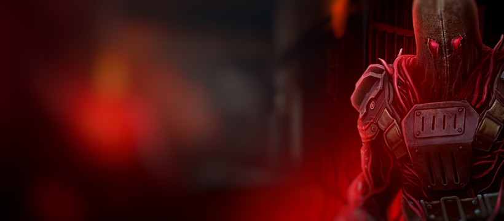

Хозмаг
Что с собой брать?
- Рюкзак: На 10+ слотов, для Хозмага особо много слотов не нужно. Но если в наличии есть рюкзак на 15+ слотов, смело надевайте его. Если вы боитесь умереть в нем при первом прохождении, то стоит одевать его уже на второй заход.
- Оружие:
- Одна качественная снайперская винтовка - на турель и на алтарь.
- 3-4 Автомата (FN-SCAR, AKM, или M16) - на обычных мобов.
- АКМ Фанатика Распада - на кровавые дыры (если у вас их много - смело используйте их и на обычных мобов).
- АКМ Дамбалы или другое кислотное оружие - на слабых и сильных мобов в броне.
- Любое огненное оружие (дальнее или ближнее) для быстрого убийства Палача.
- Держите в инвентаре или в шкафчике сильное легендарное оружие, кислотное или огненное, если понимаете, что не справляетесь с сильным врагом.
- Броня: В Хозмаге не нужна Легендарная броня, достаточно зеленой брони 7-8 ранга. Подойдет комплект брони Следопыта, или же Проводника, если вы достигли высокого уровня.
- Метательное: Подойдут самые обычные метательные топорики, стака 2, их хватит с головой на полное прохождение Хозмага. Также можно взять коктейль Молотова, отлично подходят на замену другому метательному оружию, так как Пиявочники имеют уязвимость к огню.
- Экипировка: Одного Прижигателя вполне хватает на полное прохождение. Еще можно взять Огниво или Язву, чтобы кислотное или огненное оружие наносили больше урона. Толкач НЕ нужен.
- Баффы и расходники: В отличие от Каземат Хозмага, здесь практически не требуются какие-то баффы, но если у вас есть баффы на кислотный или огненный урон, можете брать их с собой, чтобы было комфортнее проходить локацию. Рекомендуется брать с собой еду, которая дает определенные баффы для более легкого прохождения. Надо взять с собой стак еды, воду брать не стоит, стак Гемоблокад (если сломается Прижигатель). Также нужны бинты или же перевязочные пакеты (40 штук обычно хватает). На всякий случай можно взять 5-10 стимуляторов “Феникс”.
- Другое: Ничего другого или еще чего-то особенного не требуется.
Прохождения и советы
- Не используйте найденные ключи на обычные клетки с врагами, потому что не получите двойные слезы.
- Делайте 3 выстрела из АКМ Дамбалы, чтобы броня быстро слетела с врагов.
- Как только вы убили всех противников у кровавых дыр, сжигайте их сразу, чтобы не было лишних противников.
- Начинаете вонять - используйте спиртовые салфетки, или если у вас отремонтирован душ, то идете мыться.
- Турель проще убить возле ящика, который стоит у двери (выстрелил - отбежал обратно за ящик, и снова). Алтарь можно спокойно убить с дальнобойной винтовки, он не будет до вас доставать.
- Если у вас почти спал Прижигатель, и вы прошли как минимум половину Хозмага, то стака Гемоблокад хватит на остальную половину. Главное не использовать их, когда вам повесили 1 эффект кровавых ран. Рекомендуется использовать на 3-5 стаках ран.
- Максимально крутые пушки оставьте на Палача и на Гуля-Бригадира
- В сложных ситуациях используйте стимуляторы “Феникс”.
- Как только вы дошли до комнаты с алтарем и Гулем-Бригадиром, то сначала убедитесь, что дверь возле сожженной кровавой дыры открыта, чтобы его можно было легко убить. Берите в руки АКМ Дамбалы, начинайте от него бегать по кругу и вешать по 3 эффекта, и так пока не спадет вся броня. Как только спадет броня, его можно добить из АКМ Фанатика Распада. Крайне рекомендуется уклоняться от его способности, она наносит очень много урона. Важно агрить гулей возле алтаря по одному, чтобы не было проблем с Бригадиром.
- Чтобы игра не лагала и не тормозила, перед началом прохождения обязательно очистите кэш вашего устройства и установите минимальные настройки графики в самой игре. Это поможет пройти локацию более комфортно и без сложных моментов.
Польза и выгода
Что можно найти?
- Кровавые слёзы [Артефакты, Предметы для Торговли] Эти алые артефакты используются для получения лучшего оружия, брони и ресурсов (особенно болтов), обменивая их на ящики с наградами у Торговца Братства. В Хозмаге вы можете получить одинарные и двойные кровавые слезы.
- Кровосток [Артефакты, Расходники] Артефакт, который высоко ценится опытными бродяжниками за его способность исцелять вас при нанесении вами урона.
- Качественная броня и оружие
- Различные предметы для торговли
- Различные редкие ресурсы
Зачем проходить?
- Во-первых, если вы не будете проходить эту локацию, вы не сможете собрать велосипед, а без велосипеда доступ к огромному количеству интересного и необходимого для развития контента у вас будет закрыт (Кричащий Лес, Западня, Объекты "Титан" и так далее). Во-вторых, за одинарные слезы можно получить очень много качественной экипировки, оружия и разных полезных ресурсов. Также, с помощью Хозмага можно попасть в Казематы Хозмага, отремонтировав генератор, вход к которому можно найти в Лагере Бродяжников. Казематы открывают возможность получить очень крутые вещи, получить Язык Палача и сразиться с финальным боссом Хозмага! Подробнее о Казематах читайте ниже.
Остальная информация
- СТАТУС КО-ОПа: Это локация для одиночной игры, вы не можете играть тут с другими игроками.
- СТАТУС СМЕРТИ: Если вы умрёте, ваши вещи появяться в Лагере Бродяжников, но при этом они потеряют часть своей прочности.
- СТАТУС СЛОЖНОСТИ: [Смертельно]. Опасная аномальная зона! Ранг 6 и больше (92+ ур).
- ТЕМПОРАЛЬНАЯ АКТИВНОСТЬ: Темпоральный сброс - 48 часов.
Казематы
Что с собой брать?
- Рюкзак: На 15+ слотов, лучше всего - Ястребов или Темной зоны. Мы не призываем к донату, мы говорим о необходимости данной вещи. Иметь рюкзак на 15 ячеек - необходимость для каждого игрока, который хочет расти в игре.
- Оружие:
- 2 винтовки СВДК - на турели, алтари, криты.
- 2 дробовика Spas-12 - на коконы, мобов (особенно утроб).
- Что-то дробящее, самый лучший вариант - Посох Невесты Змея (из-за кислоты, которая замедляет созревания кокона) - при надобности уничтожить кокон максимально быстро.
- АКМ Фанатика Распада - на кровавый мох и кровавые дыры.
- АКМ Дамбалы - на слабых мобов в броне.
- Испепелитель Порока или что-то в таком духе - для быстрого уничтожения хватов/когтей, для уничтожения Палача.
- АКМ Храмовых Бойцов Распада - для гулей и вообще всех, кто боится огня.
- Мачете Чёрного Бродяжника - на алтари, для моментального уничтожения.
- Шипомет Избранницы Змея - для крутецкого периодического урона по броне мобов (в большинстве случаев - гулев, когтей, язычников).
- Кислотный Автоарбалет Триады, или же что-то похожее - разрушитель брони и хп для быстрого убийства сильных мобов в броне (в том числе и Тюремщика).
- Сияющий Арбалет Распада, или же что-то похожее - для убийства Палача. Так же, на Палача можно использовать вышеперечисленные виды холодного оружия.
- В шкафчик (или в рюкзак при наличии места) положите какое-то сильное огненное и кислотное легендарное оружие, оно может понадобиться в сложных ситуациях.
- Броня: Для первого раза, для пробного раза, советую взять сет либо сет Атомного Факельщика с Бронеризой Карающего Огня и с шлемом на бафы к метательному оружию (можно и с обычной разгрузкой и шлемом), либо же сет Клима (тогда вместо Прижигателя возьмите что-то другое, но не менее сильное). На второй раз пробуйте уже в более слабой броне, и так достигните брони Проводника. Идеал прохождения - в ней.
- Метательное: Тактические томагавки - не самый лучший вариант, идеал - чёртовы ежи. Хотя, если нету навыков, то без разницы. Надо брать с собой 4+ стака чертовых ежей, и ещё несколько стаков оставлять в шкафчике. Очень много метательного надо на Кровников, их там тьма. Плюс берите с собой стак гранат, на аномалии "Кусачее Ожерелье".
- Экипировка: Прижигатель (лучше один иметь про запас в шкафчике, а ещё лучше - в рюкзаке), по возможности Гематит, он заменит Прижигатель (если нету - ничего страшного). Огниво или Язва, выбирайте то, что вам удобнее или больше по душе. Толкач НЕ нужен.
- Баффы и расходники: Баффы декора - все что есть (подходящие к Казематам, конечно). Если говорить про расходники, то надо с собой брать: стак хорошей еды, стак воды, спиртовые салфетки (минимум 10 штук), Гемоблокады (около стака), стак-два стимуляторов "Феникс", два стака перевязочных пакетов. Также надо брать по 5-6 штук каждой еды, которая даёт бафы на 10-15 минут, и со временем питаться этой едой.
- Другое: Вам нужны отмычки 3 уровня, не меньше стака. Веломодификация нужна только одна, на броню.
Прохождения и советы
- Не открывайте клетки, не убивайте мобов в них. Открывайте их только с помощью рубильников, а затем убивайте мобов, которые выбежали из клеток. Мобы за решеткой вас не тронут, а от выстрелов Кровников уворачивайтесь. Убивайте Кровников только в том случае, когда они не дают подойти к кокону.
- Из Шипомета давайте выстрелы с периодическим уроном по мобам, бегайте и ждите, пока спадут эффекты с врагов, затем снова настреляйте, и так пока вас не зажмут в тупик или не подохнут мобы.
- Водите мобов до самого входа в казематы, не подставляясь под удары.
- Не спешите, не летите сломя голову, но мобов убивайте быстро, так же быстро сжигайте дыры и уничтожайте коконы.
- Первой всегда надо сжигать кровавую дыру, затем уже убивать врагов и уничтожать кокон.
- Пытайтесь не дать коконам созреть.
- Как только разбили кокон - сжигайте кровавый мох, который появился на выходе из комнаты.
- Начинаете вонять - используйте влажные салфетки.
- От гулей Тихарей уворачивайтесь, убивайте их снайперкой, подбирая тайминг выстрела гуля.
- Турели убивайте с присяда или же из-за стенки, так же и с алтарями.
- В казематах вам будут встречаться группы мобов, особенно опасная из них - группа Сестры Язычницы и Утробы. Сестру Язычницу убивайте первой и максимально быстро, затем уже Утробу.
- Если у вас спал Прижигатель - моментально ставьте запасной или же берите в слот Гемоблокады.
- Максимально крутые пушки оставьте на Тюремщика, его важно быстро убить.
- Стимуляторы Феникс используйте в сложных ситуациях.
- Как только вы дошли до Карцера, приготовьте стимулятор Кремень, но не используйте его сразу. Сагрите мобов, убейте мобов и Тюремщика, но не стойте в зоне дествия алтаря (за дверьми). Вместо Тюремщика вы можете встретить и Вышибалу, так что будьте осторожны и подготовлены. Берёте крутую хилку, забегаете в зону действия алтаря и максимально быстро открываете двери, затем бежите из зоны действия алтаря. Теперь используйте Кремень, бегите к гулю Боевику, уворачивайтесь от его выстрелов, дождитесь его перезарядки, моментально откройте клетку с ним и сразу бегите назад и выходите из зоны действия алтаря. Получите большой урон, поэтому и нужен Кремень. Добежали до дверей, теперь ждите Боевика. Возьмите в руки снайперскую винтовку. Как только он появиться в вашем поле зрения - стреляйте со снайперки по нему издалека. когда он начинает стрелять - прячьтесь за стеной. Когда у него перезарядка - давайте несколько дальних выстрелов. Как только убили гуля, бегите к алтарю и уничтожайте его с помощью Мачете Чёрного Бродяжника.
- Чтобы игра не лагала и не тормозила, перед началом прохождения обязательно очистите кэш вашего устройства и установите минимальные настройки графики в самой игре. Это поможет пройти локацию более комфортно и без сложных моментов.
Польза и выгода
Что можно найти?
- Кровавые слёзы [Артефакты, Предметы для Торговли] Эти артефакты используются для получения лучшего оружия, брони и ресурсов (особенно болтов), обменивая их на ящики с наградами у Торговца Братства. В Казематах Хозмага вы можете получить одинарные, двойные и тройные кровавые слезы.
- Язык Палача [Артефакты, Предметы для Торговли] Уникальный артефакт, получаемый путём убийства Палача в Казематах Хозмага 20+ раз. Вы можете обменять 5 таких артефактов на один из лучших ящиков с наградами во всей игре.
- Кровосток [Артефакты, Расходники] Артефакт, который высоко ценится опытными бродяжниками за его способность исцелять вас при нанесении вами урона.
- Качественная броня и оружие
- Легендарная броня
- Различные предметы для торговли
- Различные редкие ресурсы
Зачем проходить?
- Хотя сами по себе Казематы почти никогда не являются окупаемой аномальной зоной, от них можно получить немало пользы. Это единственное место где можно добыть тройные кровавые слёзы и языки Палача, что означает приумножение в легендарном вооружении, броне и различной экипировке. Казематы понадобится вам для большого количества сюжетных заданий и продвижения в игре в общем. К примеру, добыть некоторые ресурсы для моста в Кричащий Лес можно только в Казематах. Также, тройные кровавые слезы дают возможность собрать двигатель мотоцикла, что очень и очень важно для любого опытного бродяжника и для продвижения сюжета. Основная же функция Казематов - путь к Логову Палача, которое содержит самого на данный момент сильного и нужного босса в игре - Первого Палача. Подробности о данном боссе и его прохождении читайте в нашей библиотеке в разделе "Боссы".
Остальная информация
- СТАТУС КО-ОПа: Это локация для одиночной игры, вы не можете играть тут с другими игроками.
- СТАТУС СМЕРТИ: Если вы умрёте, ваши вещи появяться в Лагере Бродяжников, но при этом они потеряют часть своей прочности.
- СТАТУС СЛОЖНОСТИ: [Смертельно]. Опасная аномальная зона! Ранг 6 и больше (92+ ур).
- ТЕМПОРАЛЬНАЯ АКТИВНОСТЬ: Темпоральный сброс - 48 часов.